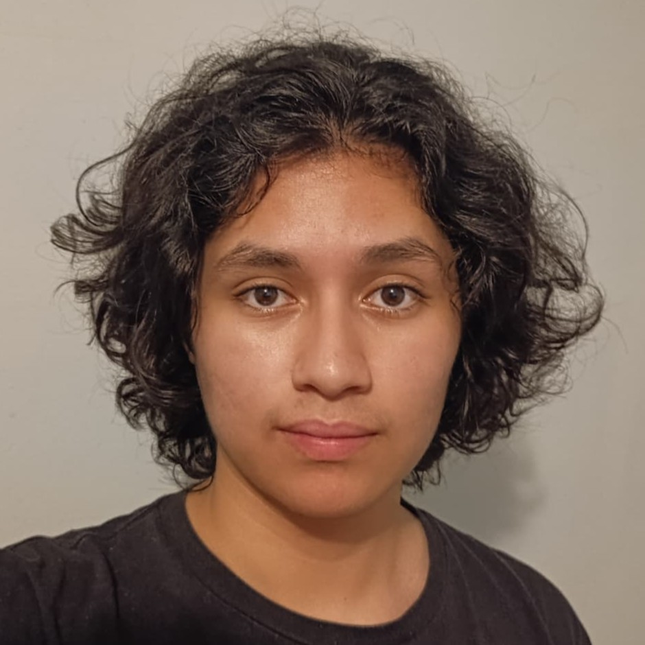
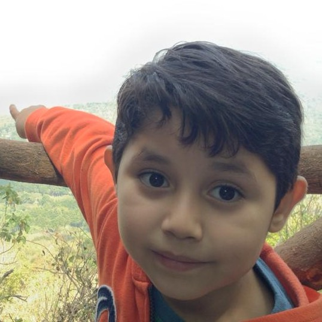

Quién Soy
Se dice que una imagen cuenta más que mil palabras, pero yo sé perfectamente que esa (←) no será suficiente para explicarle a nadie quién soy. Dependiendo de a quién le preguntes, vas a poder obtener una variedad de respuestas: para mis papás, soy un mechudo con energías de sobra; para mis amigos, soy un agente del caós; para mis compañeros de clase, soy un chico que siempre está dispuesto a ayudar y escuchar a los demás; para el gobierno y Wikipedia, soy José Alexander Alas Leiva, nacido en El Salvador el 17 de enero de 2006. Todas esas descripciones forman parte de mi persona y las acepto.
Sin embargo, para mí, toda mi vida me he visto como un chico con un propósito al que me he apegado siempre: ayudar a las personas. Es una tarea que me he autoimpuesto desde muuuuuy pequeño y ha sido una guía constante para las decisiones que tomo en mi día a día Por esta razón, incluso llegué a considerar ser psicólogo y maestro, pero opté por algo más "estable" en el contexto actual. De todos modos, si se me presenta la oportunidad de ejercerlo en algún momento, lo haría muy encantado :P
Mis Inicios
(shoutout para mis papás, ya que ellos proveyeron la mayoría de la información para esta sección).
Aquí va una anécdota interesante, mi nacimiento se resume en 3 actos: primero, el doctor le dice a mi mamá "el corazón del niño está latiendo muy lento, necesitamos que consuma azúcar"; segundo, mi mamá le dice a mi papá "yo digo que con un brownie y una coca basta" (palabras más, palabras menos); tercero, ocurre mi llegada al mundo y, afortunadamente, mi corazón no iba lento, al contrario, parecía ir tan rápido que ni mis papás ni nadie me detenía :D
Recuerdo las muchas veces que mi mamá me describía que era cómo este gatito:

Todo el tiempo que ella pasaba conmigo en nuestra casa tenía que buscar maneras de cansarme con juegos, manualidades, ejercicio o salidas al parque para que así me fuera a dormir y la dejara de "j- perdón, molestar..." cómo ella muy amablemente me dice. Eventualmente, descubrieron que una cura para mí """condición""" eran los videojuegos, por lo que mi papá me consiguió una Wii para navidad cuándo aún tenía menos de 3 años de edad. A partir de ese punto, descubrí que una de las cosas que más me apasionaría en la vida serían no solo los videojuegos, sino que también la tecnología.
Educación
Entré a kinder un poco más temprano de lo común -lo cual también lo asocio con el hecho de mi "agradable" comportamiento en casa. Esta etapa de mi vida tuvo un par de momentos muy memorables: fui mariachi, niño del tambor y el único en aprenderse su discurso para un evento cívico (gracias, mamá ;D), y también fingí un accidente para que regañaran a un niño que me caía mal y luego mi mamá me sacó del kinder.
Luego, entré al Colegio Champagnat y me gradué luego de 13 años constantes de aguantar la pura carga académica que se manejan en ese lugar. No sin antes haber formado a mi grupo de amigos más cercano y confiable con el que he pasado la mayoría del tiempo (algunos desde que entré y otros un par de años antes de graduarme). Hubieron peleas, discutas, lloradas, pero aun asi nos logramos mantener juntos (o al menos la mayoría) hasta el final. En medio de todo eso también conocí a mi actual novia, Liss <3, y con la que tomé varias decisiones importantes para nuestro futuro, cómo buscar oportunidades de estudio solo dentro del pais y estudiar una carrera que tuviera una trayectoria estable.
Lo que me lleva a la actualidad: soy estudiante de la carrera de Ingeniería de Software y Negocios Digitales en la Escuela Superior de Economía y Negocios (ESEN), donde ingresé en el 2024. Mi principal objetivo ahora es graduarme de esta carrera y obtener un currículo atráctivo para el mercado laboral. Alternativamente, quiero conformar un equipo con mis compañeros para llevar a cabo algunos de los ya varios proyectos en los que hemos trabajado y crear una empresota que nos traiga mucho $$$$$$.
Intereses y Pasiones
Más allá de mi formación académica, siento un gran entusiasmo por varias áreas clave de la tecnología que definen mis objetivos profesionales. Mis principales intereses en esta área son:
- Inteligencia Artificial: exploro constantemente cómo los algoritmos pueden resolver problemas complejos y automatizar tareas; últimamente, incluso, he estado aprendiendo a realizar automatizaciones con n8n.
- Ciencia y Análisis de Datos: me fascina la idea de transformar datos crudos en información valiosa para la toma de decisiones. Muchas veces he realizado este proceso en mi vida para tomar decisiones (solo que de forma más simplificada).
- Desarrollo Web y Bases de Datos: disfruto construyendo la lógica detrás de las aplicaciones y diseñando bases de datos eficientes y escalables con SQL.
- Gestión de Proyectos (Project Management): me interesa aprender y aplicar metodologías para desarrollar proyectos y soluciones digitales con un enfoque de negocios. Espero algún día poder incluso crear una empresa en este rubro.
Además, algunos de mis intereses en áreas más personales son:
- D&D y TTRPGs: también conocidos como Calabozos y Dragones y Juegos de Mesa de Rol, respectivamente. Me fascina organizar y jugar en campañas épicas y contar históricas emocionantes con mis amigos.
- Videojuegos indies: adoro jugar creaciones de desarrolladores apasionados y con una visión refrescante del mundo que los hace producir experiencias innovadoras y, en algunos casos, con la capacidad de cambiar mi perspectiva de algunas cosas de la vida.
- Música: sería una mentira decir que "escucho de todo", pero si me gusta escuchar una variedad de géneros de música que he visto que no muchas personas suelen recomendar, cómo el jazz antiguo, el pop de los 80s, el rock indie, el breakcore, etc. Dejaré a continuación una recomendación de mi obsesión musical más reciente: Gold - Spandau Ballet
- Leer libros interactivos o fuera de lo común: honestamente, no me gusta mucho leer. Sin embargo, ADORO leer libros interactivos que utilizan otros medios o métodos para contar una história para crear una experiencia única más allá de solo utilizando letras e imágenes.
Visión a Futuro
Si pudiera ver mi futuro desde la perspectiva de mi yo de hace 2 o 3 años, no podría creer muchas de las cosas que he logrado y que vivo día a día en mi realidad. Para mi, la forma que tenga de ver lo que depara mi futuro puede ser completamente distinta de en lo que se convertirá mi realidad dentro de un par de años. Sin embargo, si de algo puedo estar seguro de mi futuro es de lo que quiero lograr antes de graduarme.
Mi principal objeto en los próximos años de mi vida no es solo graduarme de la universidad y conseguir trabajo, sino también crecer en otras áreas de mi vida y, específicamente, obtener ciertos logros y superar algunos obstáculos de mi vida: primero, me gustaría aprender a ir en bicicleta, ya que ha sido una meta y obstáculo que he tenido por muchos años, por lo que espero cumplirla en los próximos años. Además, me gustaría aprender a hacer un videojuego completo desde 0 para cumplir con otro sueño que he tenido desde niño. Finalmente, quiero ahorrar suficiente dinero para propulsar mi vida al terminar mis estudios e independizarme con más facilidad.
Solo el tiempo podrá decir si lograré cumplir con las metas que me he propuesto, pero aun asi me siento muy feliz de poder cada día dar mi mayor esfuerzo para seguir adelante y tener algo nuevo para añadir en esta página que si sea chistoso. Me despido por ahora y espero que ahora tengas una mejor idea de quien soy y a donde voy.
¡Gracias por leer, hasta luego :D!